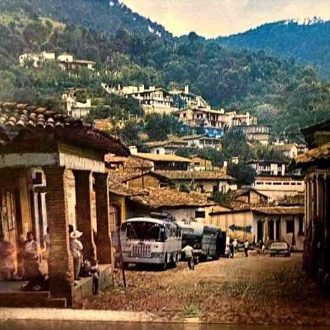
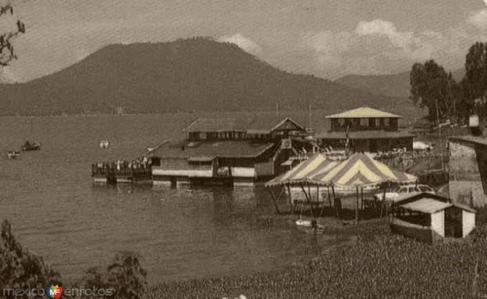
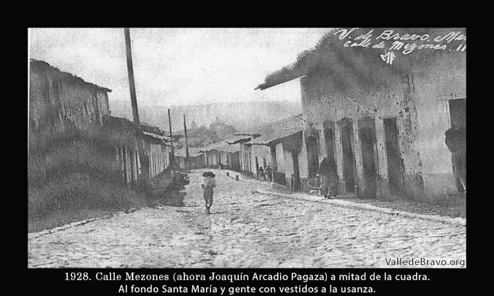

Valle de Bravo es uno de los municipios más conocidos del Estado de México por su historia, cultura, arquitectura y belleza natural. Se encuentra en la región poniente del estado y está rodeado de montañas, bosques y paisajes naturales. Su historia se remonta a la época prehispánica, cuando diferentes grupos indígenas habitaban esta región y desarrollaban actividades como la agricultura, el comercio y la elaboración de artesanías. Antes de la llegada de los españoles, el territorio era conocido como Pameje, nombre relacionado con la presencia de pueblos indígenas, principalmente mazahuas y matlatzincas. Estas comunidades tenían sus propias costumbres, tradiciones y formas de organización. Con el paso del tiempo, la región recibió influencia de otros pueblos y posteriormente quedó bajo el dominio de los mexicas.
Durante la época de la Conquista, los españoles llegaron a esta zona y comenzaron a establecer nuevas formas de gobierno y religión. Los frailes franciscanos tuvieron una participación importante en la evangelización de los habitantes y en la construcción de templos. Con el paso de los años se desarrolló un poblado alrededor de su iglesia y de sus espacios principales. Durante la época colonial, Valle de Bravo fue creciendo gracias a la agricultura, la ganadería, el comercio y otras actividades económicas. Sus habitantes construyeron casas, calles y edificios que con el tiempo dieron forma al centro histórico que conocemos actualmente.
En 1842 recibió la categoría de villa y en 1861 obtuvo el nombre de Valle de Bravo, en honor a Nicolás Bravo, personaje importante de la Independencia de México. Uno de los acontecimientos más importantes de su historia fue la construcción de la presa Miguel Alemán. Los trabajos comenzaron en 1938 y terminaron en 1947. Esta obra transformó considerablemente el paisaje de la región, ya que dio origen al lago artificial que actualmente es uno de los principales atractivos turísticos. También provocó cambios en las comunidades y actividades económicas de los alrededores. Durante el siglo XX, Valle de Bravo comenzó a crecer y a recibir más visitantes. El lago, sus montañas y sus bosques hicieron que se convirtiera en un destino turístico muy importante. Con el desarrollo del turismo llegaron hoteles, restaurantes, comercios y lugares destinados al descanso y la recreación.
|
 |
 |
 |